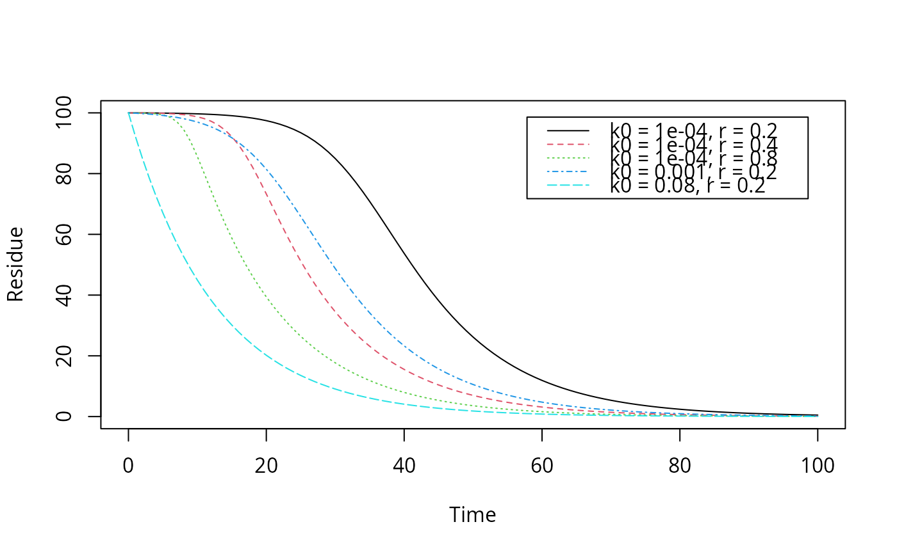

Function describing exponential decline from a defined starting value, with an increasing rate constant, supposedly caused by microbial growth
logistic.solution(t, parent_0, kmax, k0, r)Time.
Starting value for the response variable at time zero.
Maximum rate constant.
Minimum rate constant effective at time zero.
Growth rate of the increase in the rate constant.
The value of the response variable at time t.
The solution of the logistic model reduces to the
SFO.solution if k0 is equal to kmax.
FOCUS (2006) “Guidance Document on Estimating Persistence and Degradation Kinetics from Environmental Fate Studies on Pesticides in EU Registration” Report of the FOCUS Work Group on Degradation Kinetics, EC Document Reference Sanco/10058/2005 version 2.0, 434 pp, http://esdac.jrc.ec.europa.eu/projects/degradation-kinetics FOCUS (2014) “Generic guidance for Estimating Persistence and Degradation Kinetics from Environmental Fate Studies on Pesticides in EU Registration” Report of the FOCUS Work Group on Degradation Kinetics, Version 1.1, 18 December 2014 http://esdac.jrc.ec.europa.eu/projects/degradation-kinetics
Other parent solutions:
DFOP.solution(),
FOMC.solution(),
HS.solution(),
IORE.solution(),
SFO.solution(),
SFORB.solution()
# Reproduce the plot on page 57 of FOCUS (2014)
plot(function(x) logistic.solution(x, 100, 0.08, 0.0001, 0.2),
from = 0, to = 100, ylim = c(0, 100),
xlab = "Time", ylab = "Residue")
plot(function(x) logistic.solution(x, 100, 0.08, 0.0001, 0.4),
from = 0, to = 100, add = TRUE, lty = 2, col = 2)
plot(function(x) logistic.solution(x, 100, 0.08, 0.0001, 0.8),
from = 0, to = 100, add = TRUE, lty = 3, col = 3)
plot(function(x) logistic.solution(x, 100, 0.08, 0.001, 0.2),
from = 0, to = 100, add = TRUE, lty = 4, col = 4)
plot(function(x) logistic.solution(x, 100, 0.08, 0.08, 0.2),
from = 0, to = 100, add = TRUE, lty = 5, col = 5)
legend("topright", inset = 0.05,
legend = paste0("k0 = ", c(0.0001, 0.0001, 0.0001, 0.001, 0.08),
", r = ", c(0.2, 0.4, 0.8, 0.2, 0.2)),
lty = 1:5, col = 1:5)

# Fit with synthetic data
logistic <- mkinmod(parent = mkinsub("logistic"))
sampling_times = c(0, 1, 3, 7, 14, 28, 60, 90, 120)
parms_logistic <- c(kmax = 0.08, k0 = 0.0001, r = 0.2)
d_logistic <- mkinpredict(logistic,
parms_logistic, c(parent = 100),
sampling_times)
d_2_1 <- add_err(d_logistic,
sdfunc = function(x) sigma_twocomp(x, 0.5, 0.07),
n = 1, reps = 2, digits = 5, LOD = 0.1, seed = 123456)[[1]]
m <- mkinfit("logistic", d_2_1, quiet = TRUE)
plot_sep(m)
summary(m)$bpar
#> Estimate se_notrans t value Pr(>t) Lower
#> parent_0 1.057896e+02 1.9023449590 55.610120 3.768360e-16 1.016451e+02
#> kmax 6.398190e-02 0.0143201029 4.467978 3.841828e-04 3.929235e-02
#> k0 1.612775e-04 0.0005866813 0.274898 3.940351e-01 5.846688e-08
#> r 2.263946e-01 0.1718110662 1.317695 1.061043e-01 4.335843e-02
#> sigma 5.332935e+00 0.9145907310 5.830952 4.036926e-05 3.340213e+00
#> Upper
#> parent_0 109.9341588
#> kmax 0.1041853
#> k0 0.4448749
#> r 1.1821120
#> sigma 7.3256566
endpoints(m)$distimes
#> DT50 DT90 DT50_k0 DT50_kmax
#> parent 36.86533 62.41511 4297.853 10.83349